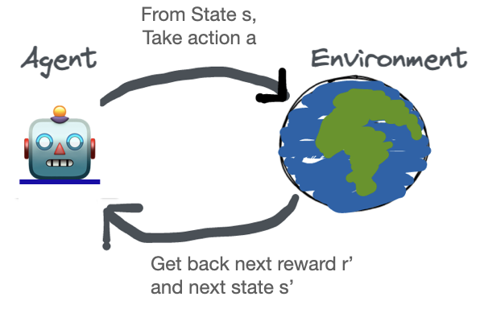
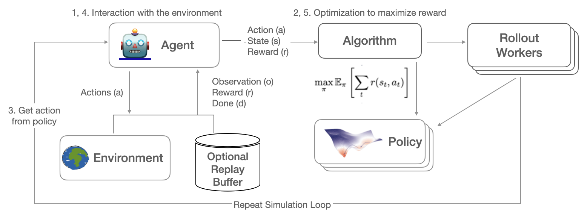
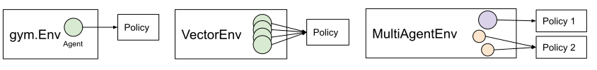

Key Concepts
Contents


Key Concepts#
On this page, we’ll cover the key concepts to help you understand how RLlib works and
how to use it. In RLlib, you use Algorithm’s to learn how to solve problem environments.
The algorithms use policies to select actions. Given a policy,
rollouts throughout an environment produce
sample batches (or trajectories) of experiences.
You can also customize the training_steps of your RL experiments.
Environments#
Solving a problem in RL begins with an environment. In the simplest definition of RL:
An agent interacts with an environment and receives a reward.
An environment in RL is the agent’s world, it is a simulation of the problem to be solved.
An RLlib environment consists of:
all possible actions (action space)
a complete description of the environment, nothing hidden (state space)
an observation by the agent of certain parts of the state (observation space)
reward, which is the only feedback the agent receives per action.
The model that tries to maximize the expected sum over all future rewards is called a policy. The policy is a function mapping the environment’s observations to an action to take, usually written π (s(t)) -> a(t). Below is a diagram of the RL iterative learning process.
The RL simulation feedback loop repeatedly collects data, for one (single-agent case) or multiple (multi-agent case) policies, trains the policies on these collected data, and makes sure the policies’ weights are kept in sync. Thereby, the collected environment data contains observations, taken actions, received rewards and so-called done flags, indicating the boundaries of different episodes the agents play through in the simulation.
The simulation iterations of action -> reward -> next state -> train -> repeat, until the end state, is called an episode, or in RLlib, a rollout.
Algorithms#
Algorithms bring all RLlib components together, making learning of different tasks
accessible via RLlib’s Python API and its command line interface (CLI).
Each Algorithm class is managed by its respective AlgorithmConfig, for example to
configure a PPO instance, you should use the PPOConfig class.
An Algorithm sets up its rollout workers and optimizers, and collects training metrics.
Algorithms also implement the Tune Trainable API for
easy experiment management.
You have three ways to interact with an algorithm. You can use the basic Python API or the command line to train it, or you
can use Ray Tune to tune hyperparameters of your reinforcement learning algorithm.
The following example shows three equivalent ways of interacting with PPO,
which implements the proximal policy optimization algorithm in RLlib.
# Configure.
from ray.rllib.algorithms.ppo import PPOConfig
config = PPOConfig().environment(env="CartPole-v1").training(train_batch_size=4000)
# Build.
algo = config.build()
# Train.
while True:
print(algo.train())
from ray import tune
# Configure.
from ray.rllib.algorithms.ppo import PPOConfig
config = PPOConfig().environment(env="CartPole-v1").training(train_batch_size=4000)
# Train via Ray Tune.
tune.run("PPO", config=config)
rllib train --run=PPO --env=CartPole-v1 --config='{"train_batch_size": 4000}'
RLlib Algorithm classes coordinate the distributed workflow of running rollouts and optimizing policies. Algorithm classes leverage parallel iterators to implement the desired computation pattern. The following figure shows synchronous sampling, the simplest of these patterns:

Synchronous Sampling (e.g., A2C, PG, PPO)#
RLlib uses Ray actors to scale training from a single core to many thousands of cores in a cluster.
You can configure the parallelism used for training by changing the num_workers parameter.
Check out our scaling guide for more details here.
Policies#
Policies are a core concept in RLlib. In a nutshell, policies are Python classes that define how an agent acts in an environment. Rollout workers query the policy to determine agent actions. In a Farama-Foundation Gymnasium environment, there is a single agent and policy. In vector envs, policy inference is for multiple agents at once, and in multi-agent, there may be multiple policies, each controlling one or more agents:
Policies can be implemented using any framework. However, for TensorFlow and PyTorch, RLlib has build_tf_policy and build_torch_policy helper functions that let you define a trainable policy with a functional-style API, for example:
def policy_gradient_loss(policy, model, dist_class, train_batch):
logits, _ = model.from_batch(train_batch)
action_dist = dist_class(logits, model)
return -tf.reduce_mean(
action_dist.logp(train_batch["actions"]) * train_batch["rewards"])
# <class 'ray.rllib.policy.tf_policy_template.MyTFPolicy'>
MyTFPolicy = build_tf_policy(
name="MyTFPolicy",
loss_fn=policy_gradient_loss)
Policy Evaluation#
Given an environment and policy, policy evaluation produces batches of experiences. This is your classic “environment interaction loop”. Efficient policy evaluation can be burdensome to get right, especially when leveraging vectorization, RNNs, or when operating in a multi-agent environment. RLlib provides a RolloutWorker class that manages all of this, and this class is used in most RLlib algorithms.
You can use rollout workers standalone to produce batches of experiences. This can be done by calling worker.sample() on a worker instance, or worker.sample.remote() in parallel on worker instances created as Ray actors (see WorkerSet).
Here is an example of creating a set of rollout workers and using them gather experiences in parallel. The trajectories are concatenated, the policy learns on the trajectory batch, and then we broadcast the policy weights to the workers for the next round of rollouts:
# Setup policy and rollout workers.
env = gym.make("CartPole-v1")
policy = CustomPolicy(env.observation_space, env.action_space, {})
workers = WorkerSet(
policy_class=CustomPolicy,
env_creator=lambda c: gym.make("CartPole-v1"),
num_workers=10)
while True:
# Gather a batch of samples.
T1 = SampleBatch.concat_samples(
ray.get([w.sample.remote() for w in workers.remote_workers()]))
# Improve the policy using the T1 batch.
policy.learn_on_batch(T1)
# The local worker acts as a "parameter server" here.
# We put the weights of its `policy` into the Ray object store once (`ray.put`)...
weights = ray.put({"default_policy": policy.get_weights()})
for w in workers.remote_workers():
# ... so that we can broacast these weights to all rollout-workers once.
w.set_weights.remote(weights)
Sample Batches#
Whether running in a single process or a large cluster,
all data in RLlib is interchanged in the form of sample batches.
Sample batches encode one or more fragments of a trajectory.
Typically, RLlib collects batches of size rollout_fragment_length from rollout workers, and concatenates one or
more of these batches into a batch of size train_batch_size that is the input to SGD.
A typical sample batch looks something like the following when summarized. Since all values are kept in arrays, this allows for efficient encoding and transmission across the network:
sample_batch = { 'action_logp': np.ndarray((200,), dtype=float32, min=-0.701, max=-0.685, mean=-0.694),
'actions': np.ndarray((200,), dtype=int64, min=0.0, max=1.0, mean=0.495),
'dones': np.ndarray((200,), dtype=bool, min=0.0, max=1.0, mean=0.055),
'infos': np.ndarray((200,), dtype=object, head={}),
'new_obs': np.ndarray((200, 4), dtype=float32, min=-2.46, max=2.259, mean=0.018),
'obs': np.ndarray((200, 4), dtype=float32, min=-2.46, max=2.259, mean=0.016),
'rewards': np.ndarray((200,), dtype=float32, min=1.0, max=1.0, mean=1.0),
't': np.ndarray((200,), dtype=int64, min=0.0, max=34.0, mean=9.14)
}
In multi-agent mode,
sample batches are collected separately for each individual policy.
These batches are wrapped up together in a MultiAgentBatch,
serving as a container for the individual agents’ sample batches.
Training Step Method (Algorithm.training_step())#
Note
It’s important to have a good understanding of the basic ray core methods before reading this section.
Furthermore, we utilize concepts such as the SampleBatch (and its more advanced sibling: the MultiAgentBatch),
RolloutWorker, and Algorithm, which can be read about on this page
and the rollout worker reference docs.
Finally, developers who are looking to implement custom algorithms should familiarize themselves with the Policy and Model classes.
What is it?#
The training_step() method of the Algorithm class defines the repeatable
execution logic that sits at the core of any algorithm. Think of it as the python implementation
of an algorithm’s pseudocode you can find in research papers.
You can use training_step() to express how you want to
coordinate the collection of samples from the environment(s), the movement of this data to other
parts of the algorithm, and the updates and management of your policy’s weights
across the different distributed components.
In short, a developer will need to override/modify the ``training_step`` method if they want to make custom changes to an existing algorithm, write their own algo from scratch, or implement some algorithm from a paper.
When is training_step() invoked?#
The Algorithm’s training_step() method is called:
when the
train()method ofAlgorithmis called (e.g. “manually” by a user that has constructed anAlgorithminstance).when an RLlib Algorithm is being run by Ray Tune.
training_step()will be continuously called till the ray tune stop criteria is met.
Key Subconcepts#
In the following, using the example of VPG (“vanilla policy gradient”), we will try to illustrate
how to use the training_step() method to implement this algorithm in RLlib.
The “vanilla policy gradient” algo can be thought of as a sequence of repeating steps, or dataflow, of:
Sampling (to collect data from an env)
Updating the Policy (to learn a behavior)
Broadcasting the updated Policy’s weights (to make sure all distributed units have the same weights again)
Metrics reporting (returning relevant stats from all the above operations with regards to performance and runtime)
An example implementation of VPG could look like the following:
def training_step(self) -> ResultDict:
# 1. Sampling.
train_batch = synchronous_parallel_sample(
worker_set=self.workers,
max_env_steps=self.config["train_batch_size"]
)
# 2. Updating the Policy.
train_results = train_one_step(self, train_batch)
# 3. Synchronize worker weights.
self.workers.sync_weights()
# 4. Return results.
return train_results
Note
Note that the training_step method is deep learning framework agnostic.
This means that you should not write PyTorch- or TensorFlow specific code inside this module,
allowing for a strict separation of concerns and enabling us to use the same training_step()
method for both TF- and PyTorch versions of your algorithms.
DL framework specific code should only be added to the
Policy (e.g. in its loss function(s)) and
Model (e.g. tf.keras or torch.nn neural network code) classes.
Let’s further break down our above training_step() code.
In the first step, we collect trajectory data from the environment(s):
train_batch = synchronous_parallel_sample(
worker_set=self.workers,
max_env_steps=self.config["train_batch_size"]
)
Here, self.workers is a set of RolloutWorkers that are created in the Algorithm’s setup() method
(prior to calling training_step()).
This WorkerSet is covered in greater depth on the WorkerSet documentation page.
The utility function synchronous_parallel_sample can be used for parallel sampling in a blocking
fashion across multiple rollout workers (returns once all rollout workers are done sampling).
It returns one final MultiAgentBatch resulting from concatenating n smaller MultiAgentBatches
(exactly one from each remote rollout worker).
The train_batch is then passed to another utility function: train_one_step.
train_results = train_one_step(self, train_batch)
Methods like train_one_step and multi_gpu_train_one_step are used for training our Policy.
Further documentation with examples can be found on the train ops documentation page.
The training updates on the policy are only applied to its version inside self.workers.local_worker.
Note that each WorkerSet has n remote workers and exactly one “local worker” and that each worker (remote and local ones)
holds a copy of the policy.
Now that we updated the local policy (the copy in self.workers.local_worker), we need to make sure
that the copies in all remote workers (self.workers.remote_workers) have their weights synchronized
(from the local one):
self.workers.sync_weights()
By calling self.workers.sync_weights(),
weights are broadcasted from the local worker to the remote workers. See rollout worker
reference docs for further details.
return train_results
A dictionary is expected to be returned that contains the results of the training update.
It maps keys of type str to values that are of type float or to dictionaries of
the same form, allowing for a nested structure.
For example, a results dictionary could map policy_ids to learning and sampling statistics for that policy:
{
'policy_1': {
'learner_stats': {'policy_loss': 6.7291455},
'num_agent_steps_trained': 32
},
'policy_2': {
'learner_stats': {'policy_loss': 3.554927},
'num_agent_steps_trained': 32
},
}
Training Step Method Utilities#
RLlib provides a collection of utilities that abstract away common tasks in RL training.
In particular, if you would like to work with the various training_step methods or implement your
own, it’s recommended to familiarize yourself first with these following concepts here:
Sample Batch:
SampleBatch and MultiAgentBatch are the two types that we use for storing trajectory data in RLlib. All of our
RLlib abstractions (policies, replay buffers, etc.) operate on these two types.
Rollout Workers:
Rollout workers are an abstraction that wraps a policy (or policies in the case of multi-agent) and an environment.
From a high level, we can use rollout workers to collect experiences from the environment by calling
their sample() method and we can train their policies by calling their learn_on_batch() method.
By default, in RLlib, we create a set of workers that can be used for sampling and training.
We create a WorkerSet object inside of setup which is called when an RLlib algorithm is created. The WorkerSet has a local_worker
and remote_workers if num_workers > 0 in the experiment config. In RLlib we typically use local_worker
for training and remote_workers for sampling.
Train Ops:
These are methods that improve the policy and update workers. The most basic operator, train_one_step, takes in as
input a batch of experiences and emits a ResultDict with metrics as output. For training with GPUs, use
multi_gpu_train_one_step. These methods use the learn_on_batch method of rollout workers to complete the
training update.
Replay Buffers: RLlib provides a collection of replay buffers that can be used for storing and sampling experiences.